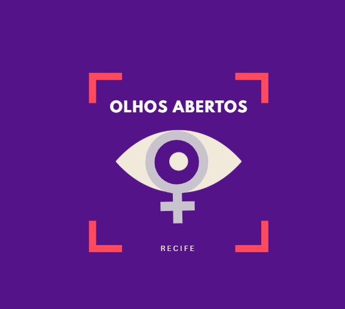

Symploke
Educação • ADS
Nota 9.8Aluna
Estudante de Análise e Desenvolvimento de Sistemas • Senac Pernambuco
Projetos
EnviadosMédia geral
AvaliaçõesCertificados
DisponíveisSelos
ConquistadosEstudante de Análise e Desenvolvimento de Sistemas, com interesse em desenvolvimento web, educação, tecnologia e projetos de impacto social. Busco transformar ideias acadêmicas em soluções reais para a comunidade.
Educação • ADS
Nota 9.8
Tecnologia • ADS
Em avaliação
Repositório acadêmico
Publicação